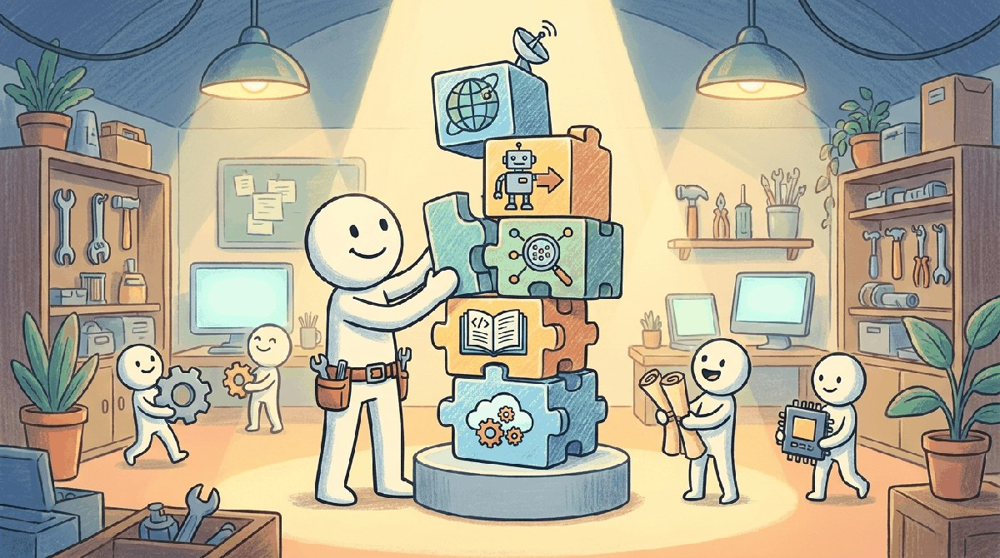

"You can read every paper on backprop and still not be able to debug an exploding gradient. The library docs are where craftsmanship begins."
Pip, Toolbox-Curating AI Agent
Chapters 0 through 4 built the conceptual core: ML, NLP, attention, the Transformer, and decoding. This chapter is the practical toolkit that ties them together: PyTorch + Hugging Face + tokenizers + the small habits that distinguish a working LLM engineer from someone who has only read about it.
Part I built the language of foundations: tensors, gradients, sequence models, the attention head, the transformer block. This chapter consolidates the toolbox you reach for when those ideas become code. The engine is PyTorch 2.x (with JAX as the second-most-common research alternative), the numerical substrate is NumPy and SciPy, the classical-ML baselines come from scikit-learn, the tokenizer layer is Hugging Face tokenizers, and the canonical teaching datasets (MNIST, CIFAR-10, SQuAD, GLUE) anchor the exercises that follow. The reference models are BERT-base and GPT-2, the two checkpoints small enough to fit on a 6 GB GPU and large enough to teach every habit Part I depends on.
Chapter Overview
Part I taught the fundamentals: tensors and autograd, sequence models, attention, the transformer block, and decoding. This chapter consolidates the toolbox that those fundamentals become in practice. We walk the four editors that handle most LLM engineering, the libraries (PyTorch, NumPy, SciPy, scikit-learn, Hugging Face tokenizers) that ship the abstractions, the datasets (MNIST, CIFAR-10, SQuAD, GLUE) that anchor the exercises, the two reference models (BERT-base, GPT-2) sized for a 6 GB GPU, and the external reading and communities that keep your toolbox current.
Bookmark this chapter. Every later Part assumes the vocabulary locked in here, and every Tools of the Trade chapter that follows refers back to one of these primitives by name.
- Evaluate IDE and notebook platforms (VS Code, Cursor, JupyterLab, Colab) for LLM engineering workflows.
- Install and validate the canonical Part I library set (torch, numpy, scipy, scikit-learn, tokenizers, datasets, matplotlib).
- Choose the right teaching dataset (MNIST, CIFAR-10, SQuAD, GLUE) for a given foundations exercise.
- Load and inspect the BERT-base and GPT-2 reference checkpoints on a 6 GB GPU.
- Identify the external venues, blogs, and communities that maintain the modern LLM toolchain.
For the entirety of Part I you only need one install line:
uv pip install torch numpy scipy scikit-learn tokenizers datasets matplotlibThat covers every exercise from tensor manipulation through a small transformer trained on text. The uv installer (Astral, 2024) is 10-100x faster than plain pip and is the modern default. Add transformers when you reach Chapter 4 and want to load BERT or GPT-2 weights instead of training from scratch.
Sections in This Chapter
Prerequisites
- All concepts from Chapters 0 through 4
- Comfortable Python development setup (virtualenv, pip, git)
- Familiarity with the Hugging Face ecosystem helps but is not required
- 5.1 Platforms Four editors handle 95% of LLM engineering.
- 5.2 Library Catalog Deep-learning engine (PyTorch / JAX), numerical substrate, classical ML, the Hugging Face Hub, and the essential Python libraries.
- 5.3 Scripting Patterns & Environment Setup Common scripting patterns (device mapping, generation, batching), linking CUDA to PyTorch, installing key libraries, and verifying your setup.
- 5.4 Datasets & Benchmarks The dataset catalogue for Part I is short on purpose.
- 5.5 Models Part I uses two pretrained reference models, BERT-base and GPT-2, and one untrained scaffold (the small transformer you build by hand in Chapter 4).
- 5.6 External Reading & Communities A textbook gets you through fundamentals; communities and ongoing reading keep you current.
What Comes Next
Part II moves from "how a transformer works" to "what a 70-billion-parameter language model actually does": tokenization at scale, the modern open-weight zoo, mechanistic interpretability, and inference optimization. Chapter 12 closes Part II with its own Tools of the Trade chapter, focused on tokenizer libraries, pretraining corpora, and the model-loading ecosystem you will live inside for the rest of the book. Continue to Chapter 6: Pre-training, Scaling Laws & Data Curation.